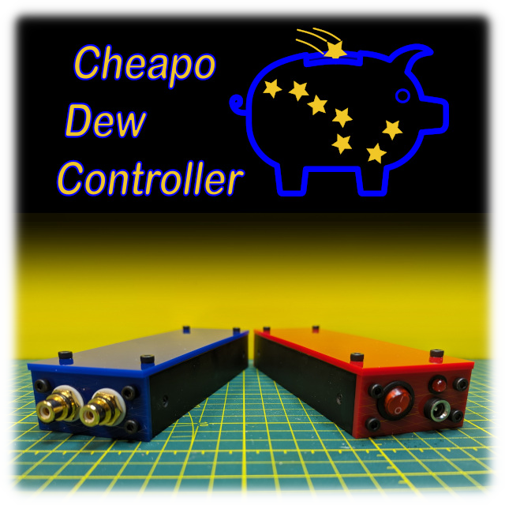
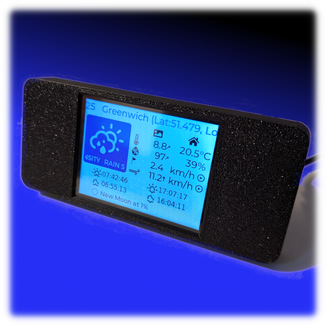
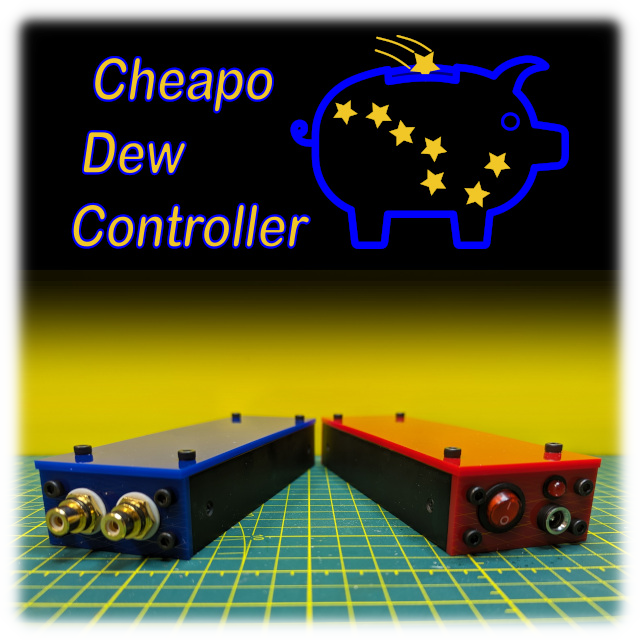
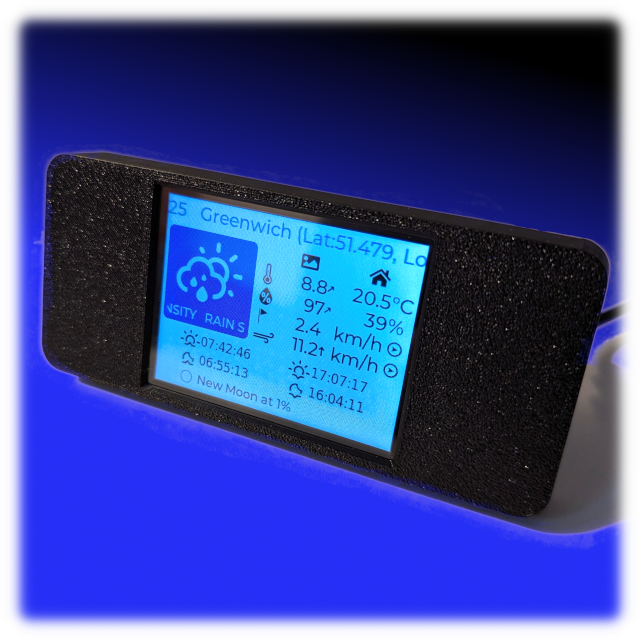

hcomet - DIY for the fun of it.
I enjoy combining my interest in astrophotography with software development, ESP32 boards, CAD, CNC and 3D printing to design and build projects for fun.
My Projects

Cheapo Dew Controller
The Cheapo Dew Controller, or CheapoDC, is a low cost, easy to build DIY astrophotography dew controller based on an ESP32-C3 mini.
A driver is available for
INDI, the open source library for control and automation of astronomical devices.

cydWeeWX Weather Display
Simple WeeWX Weather Display for the
ESP32 Cheap Yellow Display (CYD) Works with the WeeWX open source weather
software for your weather station.

Cheapo Dew Controller
The Cheapo Dew Controller, or CheapoDC, is a low cost, easy to build DIY astrophotography dew controller based on an ESP32-C3 mini. A driver is available for INDI, the open source library for control and automation of astronomical devices.

cydWeeWX Weather Display
Simple WeeWX Weather Display for the ESP32 Cheap Yellow Display (CYD) Works with the WeeWX open source weather software for your weather station.